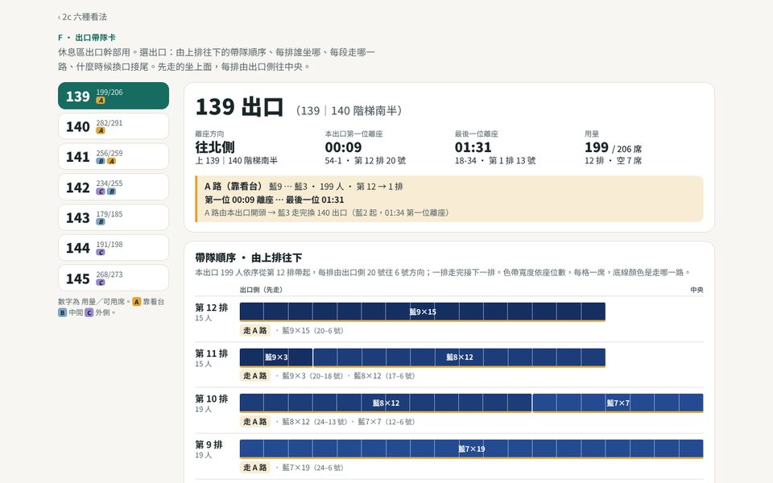

2c，換六種看法
同一份 2c 動線資料（七個出口三路接續、藍衣全部 B2 集結），依「給誰看、在哪裡看」拆成五個頁面。資料直接讀上一層的單頁，動線沒有重算；單頁照舊保留，可以開兩個分頁並排看。
和單頁比較
原本的頁面一頁服務所有人；新設計依讀者拆開，各自只放那個人需要的東西。
| 想做的事 | 單頁 | 新設計 |
|---|---|---|
| 找自己的路 | 側欄輸入「列-排」，四步口令卡；地圖北朝上，畫全部 1,609 人 | B 我的路：手機優先，列、排分兩格輸入；地圖甲舞台朝上，與 app《我的走位》同向，只畫你和你這一列 |
| 大隊長喊口令 | 用篩選留下一個大隊，自己看時間軸推算 | E 口令卡：整頁換成大隊色，下一個口令與倒數、六列各自到齊沒 |
| 看全場、投影說明 | 地圖＋播放列＋四格統計，側欄占三分之一 | A 指揮台：滿版深色、每一列畫成一條隊伍線、自動往前捲的口令表 |
| 找瓶頸、調排程 | 播放時看集結區的人數圈 | C 總譜：54 列 × 時間攤開，每人一條線，橘色越長等越久 |
| 休息區出口帶隊 | 沒有 | F 出口卡：每個出口一條隊伍，由上排往下、何時換口接尾 |
| 印給集結區 | 沒有 | D 講義：六個關鍵時刻，A3 橫式 |
六個方向

A · 演練指揮台
企劃 · 行前說明會投影、彩排檢討
地圖滿版、深底投影，介面退到四角。同一列正在走的人連成一條隊伍線，線頭的點是前方；在集結區排隊的列畫淡，集結區名稱旁直接寫此刻在那裡等的人數。投影在遠處看，就是一列一列的隊伍在走，和現場「第幾列跟上」的口令對得起來。底部一條時間軸放「第一～三出」與「大隊 1–9 進場」兩軌。
- 相較單頁
- 拿掉側欄與篩選，地圖從約三分之二寬變成滿版

B · 我的一條路
每一位菩薩 · 手機、彩排前一晚或走廊上
一進來只問身分證位置。地圖甲舞台朝上，只畫你和你這一列；下面是起、走、集、進、到五步口令，點哪一步地圖就飛到那一段。
- 相較單頁
- 方向與 app 一致，只看自己這一條路

C · 動線總譜
企劃 · 筆電上調排程
不播放動畫，把時間攤開：54 列 × 時間，每一條細線是一位菩薩，綠是走、橘是等、藍是進場。藍衣先下 B2 等、白衣後走，哪些列等得久（橘色拉得長）一眼就看得到。滑過任一列，右邊地圖只亮那一列。
- 相較單頁
- 原本要播放才看得到壅塞；這裡整場一張圖

D · 六格講義
幹部 · 印成 A3 發下去、貼在集結區
六個關鍵時刻的小圖，每人畫出前 8 秒走過的路當軌跡；說明照 2c 的排法寫（藍衣先下 B2、白衣候隊或接尾、在西一入口會合成六路）。
- 相較單頁
- 單頁沒有可列印的版本

E · 大隊長口令卡
大隊長 · 手機，在集結區喊口令
選一個大隊，整頁換成那個大隊的顏色：下一個口令與倒數、六列各自的狀態、口令表。白衣和藍衣分開集結，口令自動拆成「白衣到齊」「藍衣到齊」，再加上前一大隊過西一入口的交接點。
- 相較單頁
- 原本要自己篩選、自己推算時間

F · 出口帶隊卡
休息區出口幹部 · 手機或印出來，在看台走道口帶隊
選一個出口（139–145）：由上排往下的帶隊順序、每排誰坐哪、每段走哪一路、什麼時候換口接尾。先走的坐上面，每排由出口側往中央；下方是七區並排的休息區座位圖，點座位看大隊與走哪一路。
- 相較單頁
- 單頁看不到「這個出口的人誰先走」；這張卡把每個出口攤成一條隊伍
這些頁面直接讀上一層 index.html 內嵌的動線資料，不另存副本，所以要經由網頁伺服器開啟（GitHub Pages，或本機 python3 -m http.server）。動線為示意，實際依企劃現場指示。